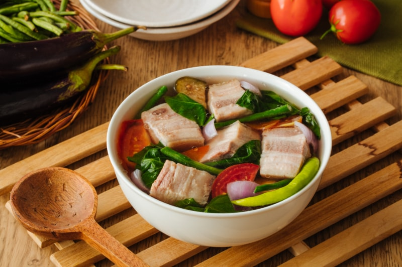

PinoyBoy's Cookbook
Pork Sinigang

Pork Sinigang is best known for its sour soup and tender pork
Ingredients
- 2 kg Pork Spare Ribs
- 6 cloves Garlic
- 2 shallots
- 1 whole bunch of Cabbage or Bok Choy
- 1 pack of Sinigang Mix
- 3 pcs Sili Espada
Cooking Process
- Cut up the Pork Ribs into 2-inch pieces
- place your garlic and onions in one pot
- place in Pork Ribs in Pot as well
- Fill pot with water
- mix in 1 pack of sinigang mix
- Bring water to boil. When at a boil, bring down your fire to medium low
- Let pork simmer until tender
- once pork is tender, add in your sili espada, cabbage or bok choy